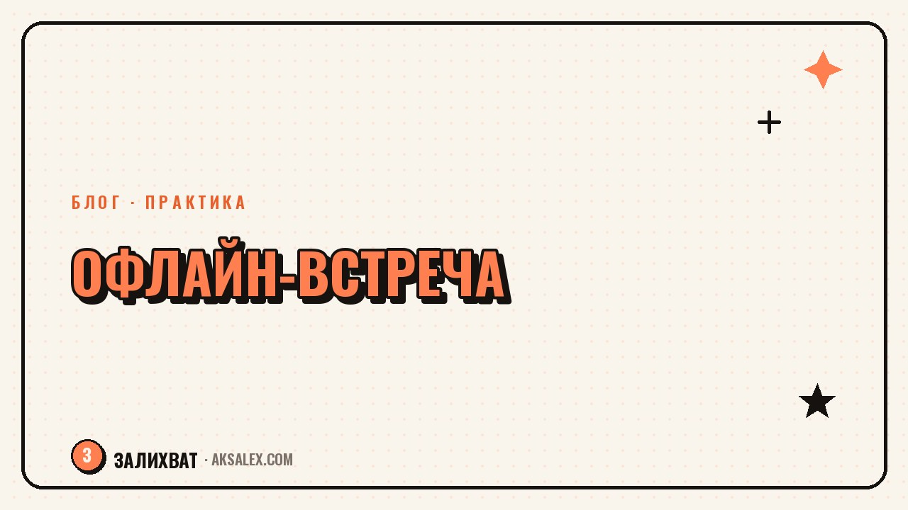

Офлайн-встречи с подписчиками: как блогеру выйти за ленту

Онлайн-охваты легко измерить, но они не заменяют живого контакта. Офлайн-встреча с подписчиками - пикник, мастер-класс, посиделки в кафе - даёт то, чего не даёт ни один ролик: подписчики видят блогера настоящим, а не через экран. И для этого не нужен бюджет на мероприятие с ведущим и фотозоной - достаточно простого формата и чёткого плана.
Зачем блогеру выходить в офлайн
Офлайн-встреча решает задачу, с которой не справляется контент: превращает подписчика в знакомого человека. После личной встречи аудитория смотрит ролики иначе - с доверием, которое не построить одним только качественным монтажем. Это особенно работает для блогов про личный опыт, обучение или локальные темы, где живой контакт логичен.
Второй эффект - контент. Одна встреча на два часа даёт материал на несколько постов и Reels: честные реакции людей, живые цитаты, кадры без постановки. Это выгодно отличается от отрепетированной съёмки, где всё заранее прописано.
Подписчики помнят не идеально смонтированный ролик, а момент, когда блогер оказался обычным человеком с теми же проблемами, что и у них.
Какой формат выбрать на старте
Не нужно сразу замахиваться на мероприятие с билетами и спонсорами. Самый простой формат - встреча в кафе или парке на 5-15 человек без строгой программы: короткое приветствие, свободное общение, пару вопросов от аудитории. Такой формат не требует бюджета и организуется за неделю.
Форматы по уровню сложности
- Мини-встреча в кафе на 5-10 человек - бесплатно для блогера, подписчики платят за себя
- Мастер-класс по теме блога на 15-30 человек - можно договориться с площадкой об аренде за процент
- Прогулка или пикник - без аренды помещения вообще, подходит для тёплого сезона
Как организовать встречу без лишних затрат
Площадку для первой встречи не обязательно снимать специально - многие кафе и антикафе дают зал бесплатно в обмен на упоминание в сторис или минимальный средний чек с гостей. Договориться об этом можно одним сообщением администратору заведения.
- Выбрать площадку с бесплатной или символической арендой при условии упоминания
- Собрать заявки через форму в сторис - это сразу даёт число гостей для расчёта места
- Назначить встречу за 1-2 недели - дольше люди забывают, короче не успевают спланировать
- Подготовить 3-5 простых вопросов для разговора, если тишина затянется
Для первой встречи не нужен бейдж, мерч и фотозона - это добавляется позже, когда формат обкатан и понятно, что аудитория реально приходит.
Что делать с контентом после встречи
Самая частая ошибка - провести встречу и не зафиксировать её в контенте. Один человек с телефоном, снимающий общие планы и короткие реакции, даёт материал на пост-итог, несколько Reels и сторис на неделю вперёд. Не нужен оператор - достаточно заранее попросить кого-то из близких подписчиков помочь со съёмкой в обмен на бесплатное участие.
После встречи стоит написать пост с честным итогом: что получилось, что в следующий раз сделать иначе. Такая прозрачность работает лучше глянцевого отчёта - аудитория ценит, когда блогер не боится показать, что первая встреча была не идеальной.
Сравнение форматов офлайн-встреч
Ниже - сравнение трёх вариантов встреч по бюджету и сложности организации, чтобы выбрать подходящий под размер аудитории.
| Формат | Бюджет | Сложность организации | Сколько человек |
|---|---|---|---|
| Прогулка или пикник | Без затрат | Низкая | 5-20 |
| Встреча в кафе | Символический чек с гостей | Низкая | 5-15 |
| Мастер-класс на площадке | Аренда или процент с билетов | Средняя | 15-30 |
| Мероприятие с программой | Аренда, ведущий, декор | Высокая | 30 и больше |
На старте разумно выбрать прогулку или встречу в кафе - эти форматы проверяют, готова ли аудитория приходить лично, прежде чем вкладываться в более сложную организацию.
Частые ошибки при первой офлайн-встрече
Главная ошибка - переоценить масштаб на старте: снять большой зал, заказать кейтеринг, а в итоге прийти пяти человекам. Лучше начать с малого формата и расширяться по факту спроса, а не по оптимистичным ожиданиям.
- Не арендовать дорогую площадку для первой, пробной встречи
- Не забывать фиксировать событие на фото и видео для последующего контента
- Не стесняться честно рассказать аудитории, как прошла встреча, включая неудачные моменты
- Не откладывать встречу на «когда наберётся больше подписчиков» - первая встреча работает и с маленькой аудиторией
Частые вопросы
Сколько подписчиков нужно, чтобы делать офлайн-встречи?
Формально - никакого минимума. Встреча на 5-10 человек в кафе работает даже с небольшой, но вовлечённой аудиторией. Важнее не число подписчиков, а доверие и интерес к теме блога.
Нужен ли бюджет для первой встречи с подписчиками?
Не обязательно. Прогулка в парке или встреча в кафе с символическим чеком с гостей не требует вложений от блогера - достаточно организовать время и место.
Как собрать людей на офлайн-встречу?
Проще всего через форму в сторис с вопросом, кто хотел бы прийти. Это и собирает заявки, и заранее показывает примерное число гостей для выбора площадки.
Что снимать на встрече для контента?
Общие планы помещения, короткие реакции гостей и несколько живых цитат. Этого достаточно для поста-итога, пары Reels и сторис на неделю - без постановочных кадров и сценария.
Стоит ли проводить встречу, если блог небольшой?
Да, маленький блог даже выигрывает от такого формата - при небольшой аудитории легче организовать близкое, тёплое общение, которое сложнее провести при большом количестве гостей.
Раз тема оказалась полезной, вот что почитать следующим. Первые клиенты редко приходят из рекламы - разбираем, где их искать на самом старте дела.
Читать статью →а не вручную